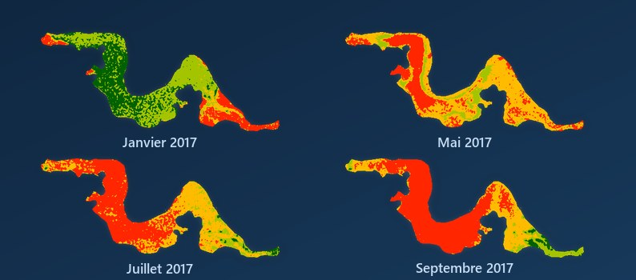

Allaye GUINDO
Géomaticien · SIG & Télédétection · Bamako
Cartes, images satellites et astuces SIG. Formations et cartes sur mesure.

Géomaticien · SIG & Télédétection · Bamako
Cartes, images satellites et astuces SIG. Formations et cartes sur mesure.